library(plot2)
aq = airquality
aq$Month = factor(month.abb[aq$Month], levels = month.abb[5:9])Tutorial
The goal of this intro tutorial is to give you a sense of the main features and syntax of plot2, a lightweight extension of the base R graphics system. We don’t try to cover everything, but you should come away with a good understanding of how the package works and how it can integrate with your own projects.
Preliminaries
Start by loading the package. For the examples in this tutorial, we’ll be using a slightly modified version of the airquality dataset that comes bundled with base R. So let’s go ahead and create that now too.
Similarity to plot()
As far as possible, plot2 tries to be a drop-in replacement for regular plot calls.
par(mfrow = c(1, 2))
plot(0:10, main = "plot")
plot2(0:10, main = "plot2")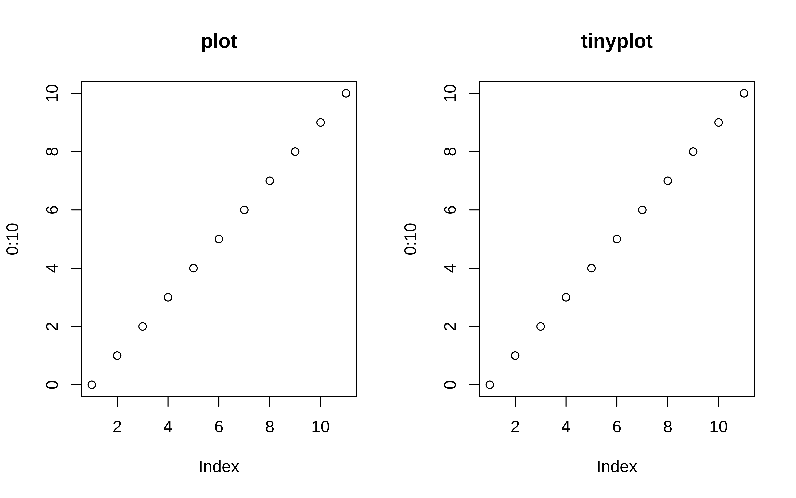
par(mfrow = c(1, 1)) # reset layoutSimilarly, we can plot elements from a data frame using either the atomic or formula methods. Here’s a simple example using the aq dataset that we created earlier.
# with(aq, plot2(Day, Temp)) # atomic method (same as below)
plot2(Temp ~ Day, data = aq) # formula method
Grouped data
Where plot2 starts to diverge from its base counterpart is with respect to grouped data. In particular, plot2 allows you to characterize groups using the by argument.1
# plot2(aq$Day, aq$Temp, by = aq$Month) # same as below
with(aq, plot2(Day, Temp, by = Month))
An arguably more convenient approach is to use the equivalent formula syntax. Just place the grouping variable after a vertical bar (i.e., |).
plot2(Temp ~ Day | Month, data = aq)
You can use standard base plotting arguments to adjust features of your plot. For example, change pch (plot character) to get filled points.
plot2(
Temp ~ Day | Month, data = aq,
pch = 16
)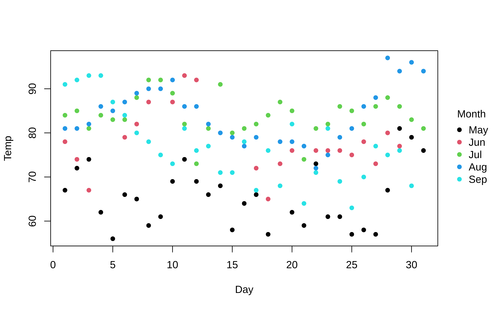
Similarly, converting to a grouped line plot is a simple matter of adjusting the type argument.
plot2(
Temp ~ Day | Month, data = aq,
type = "l"
)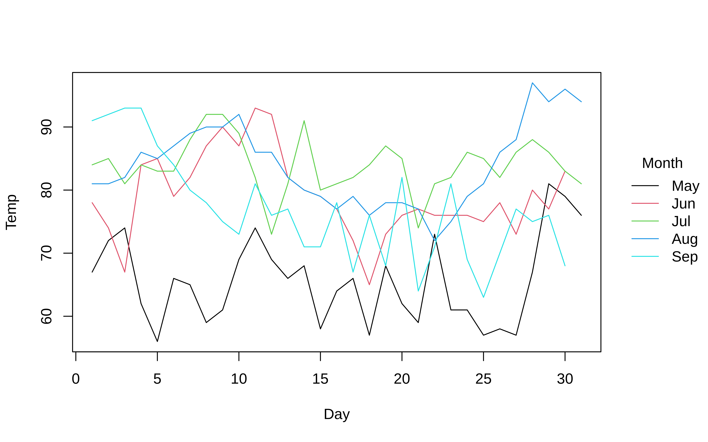
The default behaviour of plot2 is to represent groups through colour. However, note that we can automatically adjust pch and lty by groups too by passing the "by" convenience keyword. This can be used in conjunction with the default group colouring. Or, as a replacement for group colouring—an option that may be particularly useful for contexts where colour is expensive or prohibited (e.g., certain academic journals).
plot2(
Temp ~ Day | Month, data = aq,
type = "l",
col = "black", # override automatic group colours
lty = "by" # change line type by group instead
)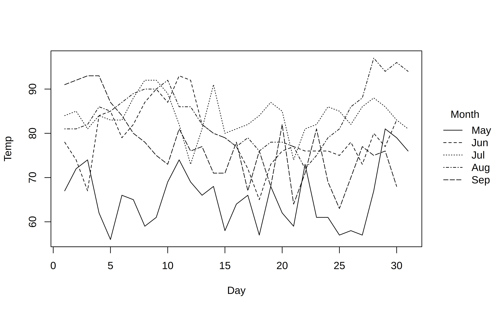
Colours
On the subject of group colours, these are easily customized via the palette argument. The default group colours are inherited from the user’s default palette. (Most likely the “R4” set of colors; see ?palette). However, all of the various palettes listed by palette.pals() and hcl.pals() are supported as convenience strings.2 Note that case-insensitive, partial matching for these convenience string is allowed. For example:
plot2(
Temp ~ Day | Month, data = aq,
type = "l",
palette = "tableau" # or "ggplot2", "okabe-ito", "set2", "harmonic", etc.
)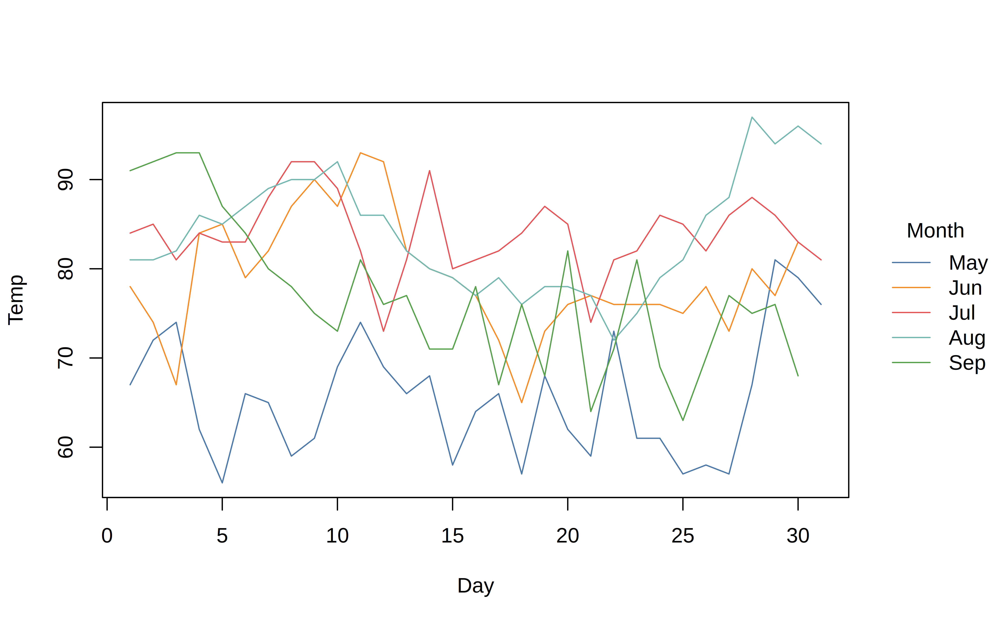
Beyond these convenience strings, users can also supply a valid palette-generating function for finer control over transparency, colour order, and so forth. We’ll see a demonstration of this further below.
To underscore what we said earlier, colours are inherited from the user’s default palette. So these can also be set globally, just as they can for the base plot function. The next code chunk will set a new default palette for the remainder of the plots that follow.
# Set the default palette globally via the generic palette function
palette("tableau")Legend
In all of the preceding plots, you will have noticed that we get an automatic legend. The legend position and look can be customized with the legend argument. At a minimum, you can pass the familiar legend position keywords as a convenience string (“topright”, “bottom”, “left”, etc.). Moreover, a key feature of plot2 is that we can easily and elegantly place the legend outside the plot area by adding a trailing “!” to these keywords. (As you may have realised, the default legend position is “right!”.) Let’s demonstrate by moving the legend to the left of the plot:
plot2(
Temp ~ Day | Month, data = aq,
type = "l",
legend = "left!"
)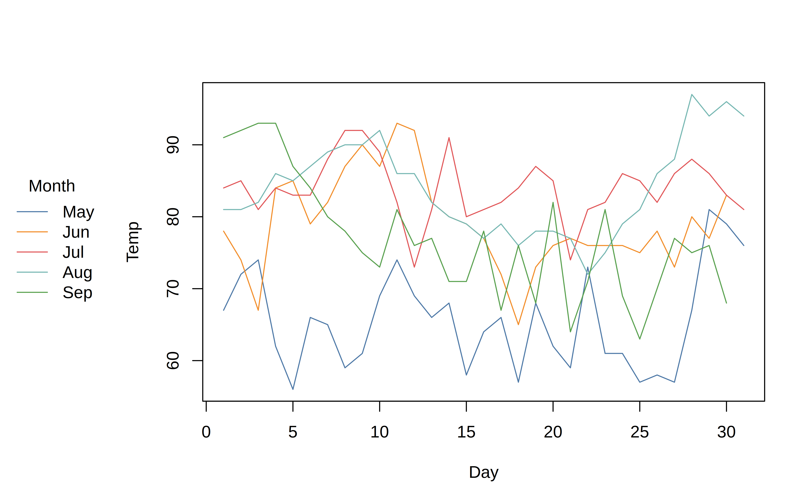
Beyond the convenience of these positional keywords, the legend argument also permits additional customization by passing an appropriate function (or, a list of arguments that will be passed on to the standard legend() function internally.) So you can change or turn off the legend title, remove the bounding box, switch the direction of the legend text to horizontal, etc. Here’s a grouped density plot example, where we also add some shading by specifying that the background colour should vary by groups too.
with(
aq,
plot2(
density(Temp),
by = Month,
fill = "by", # add fill by groups
grid = TRUE, # add background grid
legend = list("topright", bty = "o") # change legend features
)
)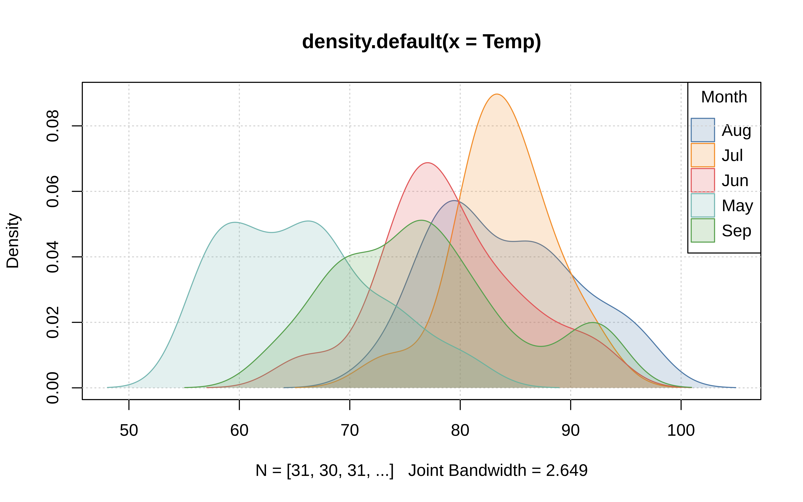
Interval plots
plot2 adds supports for interval plots via the "pointrange", "errorbar", "ribbon" type arguments. An obvious use-case is for regression analysis and prediction.
mod = lm(Temp ~ 0 + Month / Day, data = aq)
aq = cbind(aq, predict(mod, interval = "confidence"))
with(
aq,
plot2(
x = Day, y = fit,
ymin = lwr, ymax = upr,
by = Month,
type = "ribbon",
grid = TRUE,
main = "Model predictions"
)
)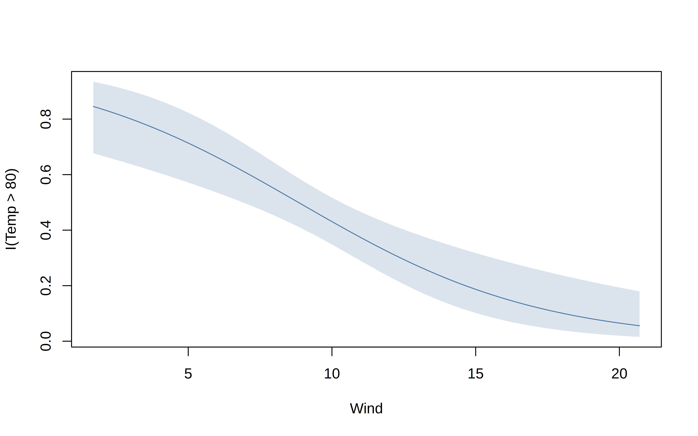
Similarly, we can grab the model estimates to produce nice coefficient plots.
coeftab = data.frame(
gsub("Month", "", names(coef(mod))),
coef(mod),
confint(mod)
) |>
setNames(c("term", "estimate", "ci_low", "ci_high"))
with(
subset(coeftab, !grepl("Day", term)),
plot2(
x = term, y = estimate,
ymin = ci_low, ymax = ci_high,
type = "pointrange", # or: "errobar", "ribbon"
pch = 19, col = "dodgerblue",
grid = TRUE,
main = "Average Monthly Effect on Temperature"
)
)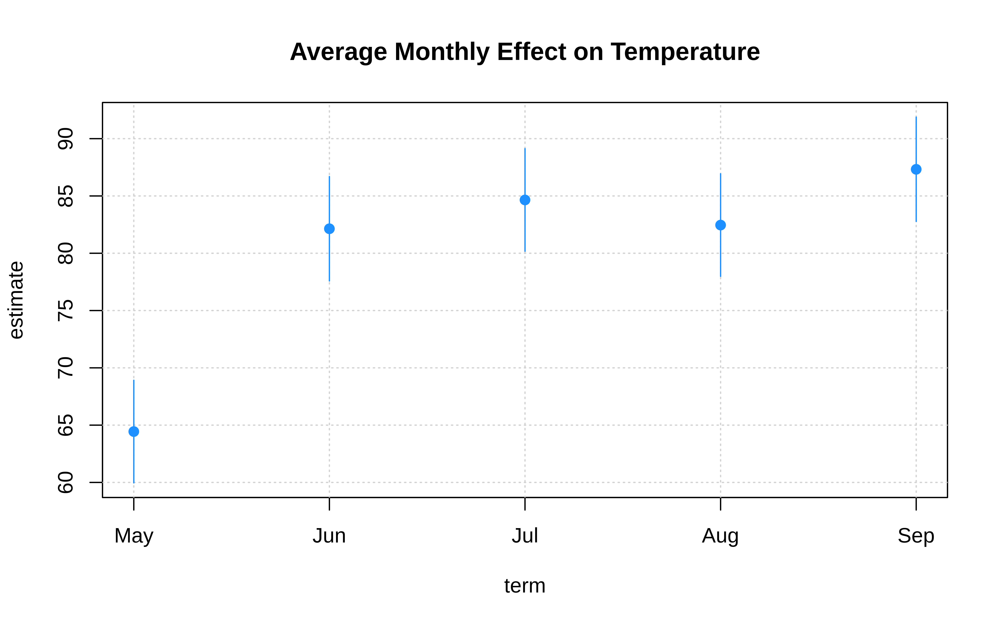
Facets
Alongside the standard “by” grouping approach that we have seen thus far, plot2 also supports faceted plots. Mirroring the main plot2 function, the facet argument accepts both atomic and formula methods.
with(
aq,
plot2(
x = Day, y = fit,
ymin = lwr, ymax = upr,
type = "ribbon",
facet = Month, ## <- facet, not by
grid = TRUE,
main = "Predicted air temperatures"
)
)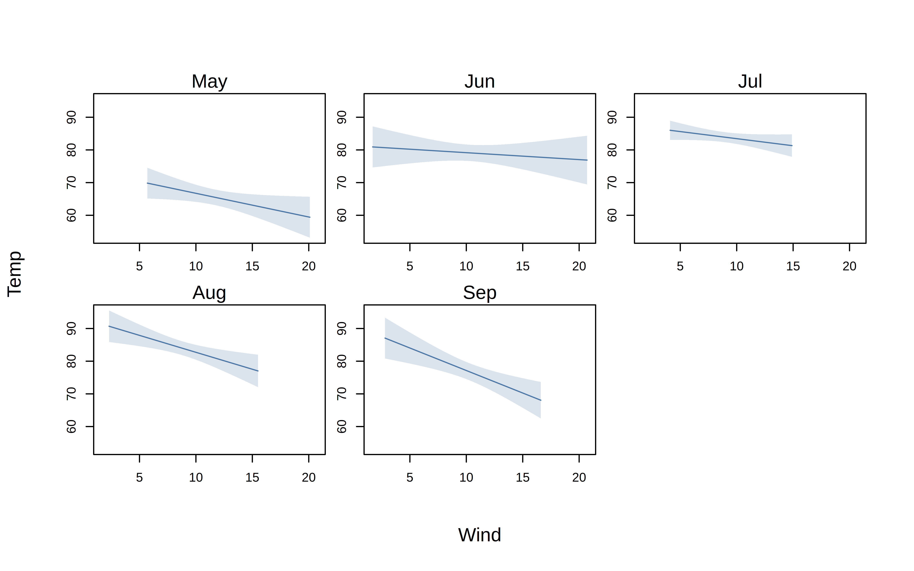
By default, facets will be arranged in a square configuration if more than three facets are detected. Users can override this behaviour by supplying nrow or ncol in the “facet.args” helper function. (The margin padding between individual facets can also be adjusted via the fmar argument.) Note that we can also reduce axis label redundancy by turning off the plot frame.
with(
aq,
plot2(
x = Day, y = fit,
ymin = lwr, ymax = upr,
type = "ribbon",
facet = Month,
facet.args = list(nrow = 1),
grid = TRUE, frame = FALSE,
main = "Predicted air temperatures"
)
)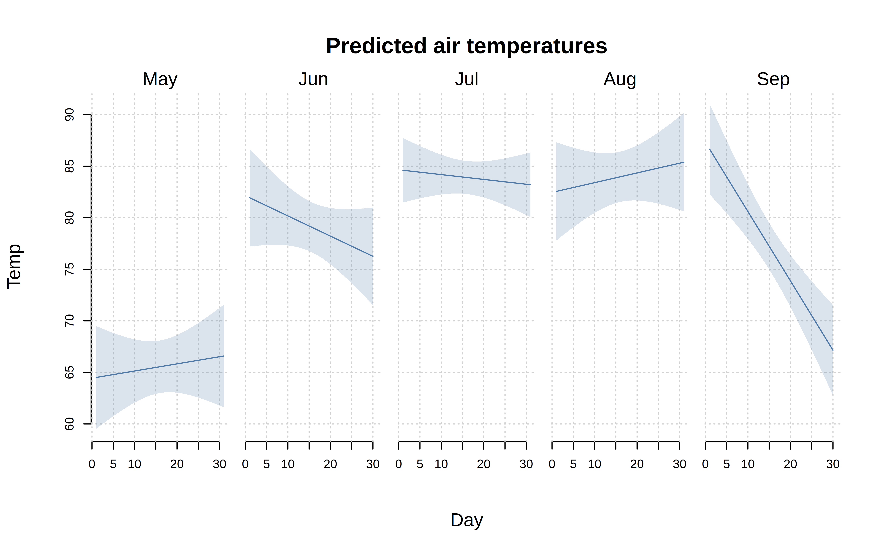
Here’s a slightly fancier version where we combine facets with (by) colour grouping, add a background fill to the facet text, and also add back the original values to our model predictions. For this particular example, we’ll use the facet = "by" convenience shorthand to facet along the same month variable as the colour grouping. But you can easily specify different by and facet variables if that’s what your data support.
# Plot the original points
with(
aq,
plot2(
x = Day, y = Temp,
by = Month,
facet = "by", facet.args = list(bg = "grey90"),
palette = "dark2",
grid = TRUE, frame = FALSE, ylim = c(50, 100),
main = "Actual and predicted air temperatures"
)
)
# Add the model predictions to the same plot
with(
aq,
plot2(
x = Day, y = fit,
ymin = lwr, ymax = upr,
by = Month, facet = "by",
type = "ribbon",
palette = "dark2",
add = TRUE
)
)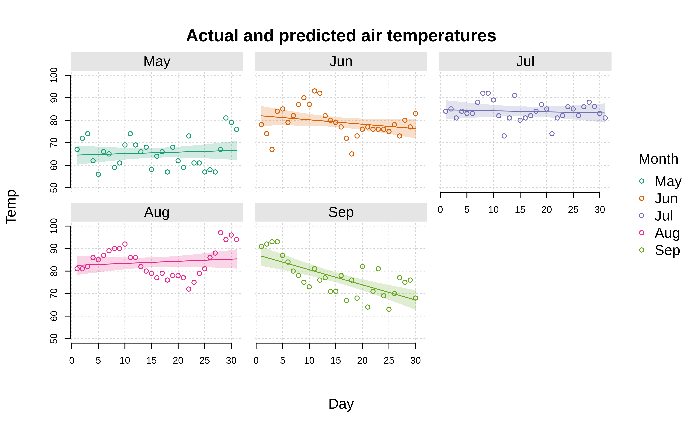
Again, the facet argument also accepts a formula interface. One particular use case is for two-sided formulas, which arranges the facet layout in a fixed grid arrangement. Here’s a simple (if contrived) example.
aq$hot = ifelse(aq$Temp>=75, "hot", "cold")
aq$windy = ifelse(aq$Wind>=15, "windy", "calm")
plot2(
Temp ~ Day, data = aq,
facet = windy ~ hot,
# the rest of these arguments are optional...
facet.args = list(col = "white", bg = "black"),
pch = 16, col = "dodgerblue",
grid = TRUE, frame = FALSE, ylim = c(50, 100),
main = "Daily temperatures vs. wind"
)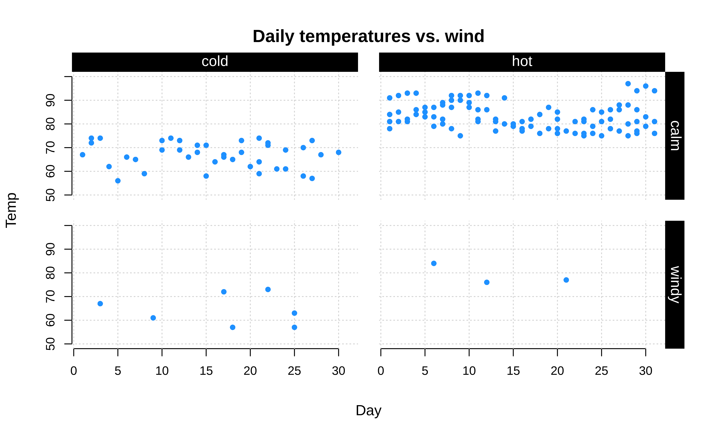
Customization
Customizing your plots further is straightforward, whether that is done by changing global parameters (via par) or invoking plot2 arguments. Here’s a quick penultimate example, where we change our point character, tick labels, and font family globally, before adding some transparency to our colour palette, and use Tufte-style floating axes with a background panel grid.
par(
pch = 16, # Filled points as default
las = 1, # Horizontal axis tick labels
family = "HersheySans" # Use a (built-in) Hershey font instead of Arial default
)
plot2(
Temp ~ Day | Month, data = aq,
type = "b",
palette = palette.colors(palette = "tableau", alpha = 0.5),
frame = FALSE, grid = TRUE,
main = "Daily temperatures by month"
)
(For access to a wider array of fonts, you might consider the showtext package (link).)
At the risk of repeating ourselves, the use of par in the previous example again underscores the correspondence with the base graphics system. Because plot2 is effectively a convenience wrapper around base plot, any global elements that you have set for the latter should carry over to the former. For nice out-of-the-box themes, we recommend the basetheme package (link).
par(pch = 15, las = 0, family = "") # change/revert global changes from above
library(basetheme)
basetheme("royal") # or "clean", "dark", "ink", "brutal", etc.
plot2(
Temp ~ Day | Month, data = aq,
type = "b",
pch = "by",
palette = "tropic",
main = "Daily temperatures by month"
)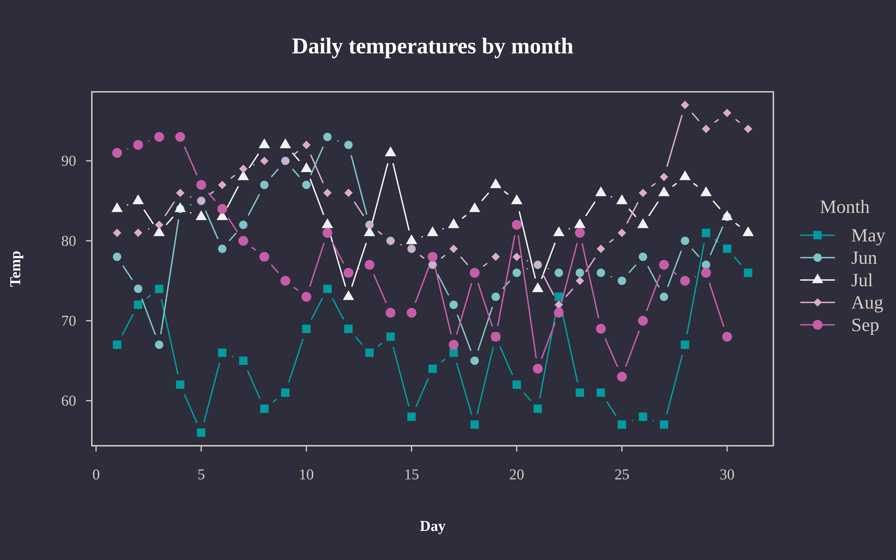
basetheme(NULL) # back to default theme
dev.off()
#> null device
#> 1Conclusion
In summary, consider the plot2 package if you are looking for base R plot functionality with some added convenience features. You can use pretty much the same syntax and all of your theme elements should carry over too. It has no dependencies other than base R itself and this makes it an attractive option for package developers or situations where dependency management is expensive (e.g., an R application running in a browser via WebAssembly).
Footnotes
At this point, experienced base plot users might protest that you can colour by groups using the
colargument, e.g.with(aq, plot(Day, Temp, col = Month)). This is true, but there are several limitations. First, you don’t get an automatic legend. Second, the baseplot.formulamethod doesn’t specify the grouping within the formula itself (not a deal-breaker, but not particularly consistent either). Third, and perhaps most importantly, this grouping doesn’t carry over to line plots (i.e., type=“l”). Instead, you have to transpose your data and usematplot. See this old StackOverflow thread for a longer discussion.↩︎See the accompanying help pages of those two functions for more details on the available palettes, or read the article by Achim Zeileis and Paul Murrell.↩︎